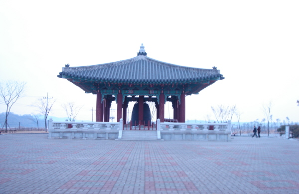
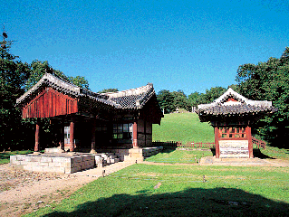

임진각국민관광지
6.25전쟁의 슬픔이 새겨져있는 곳이다. 각종 전적비와 분단 전 한반도
끝까지 달리던 기차가 전시되어 있으며 그 외에도 자유의 다리,평화의 종,
통일공원,평화랜드 등이 있다

파주삼릉
공릉(恭陵),순릉(順陵),영릉(永陵) 으로 이루어진 조선왕릉군이다.
공릉은 예종의 정비인 장순왕후의 능, 순릉은 성종의 정비
공혜왕후의 능,영릉은 진종과 효순왕후의 능이다.
